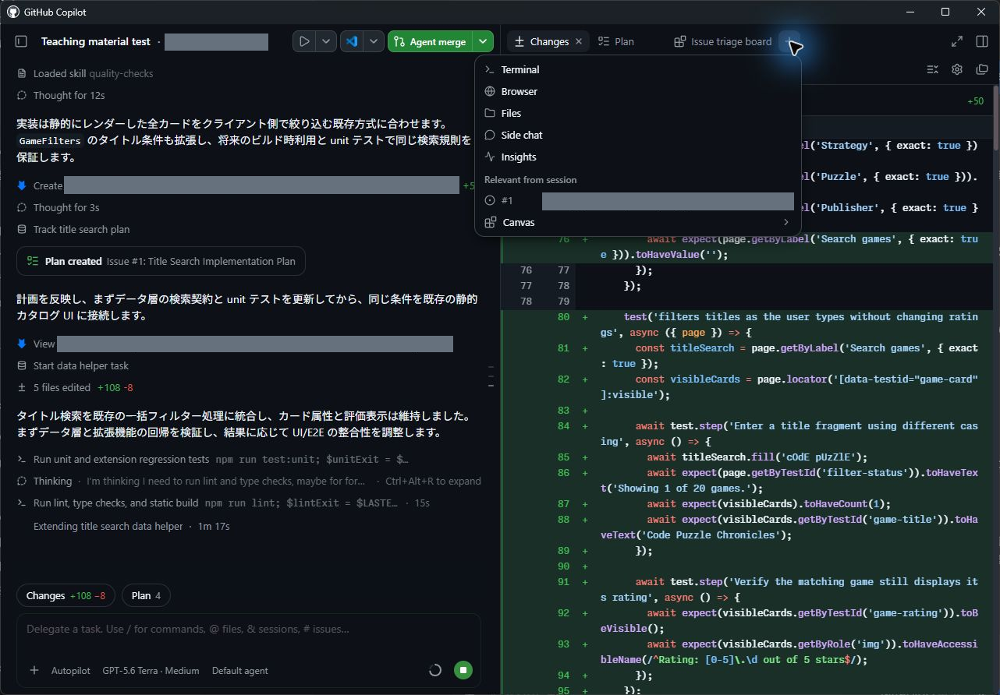
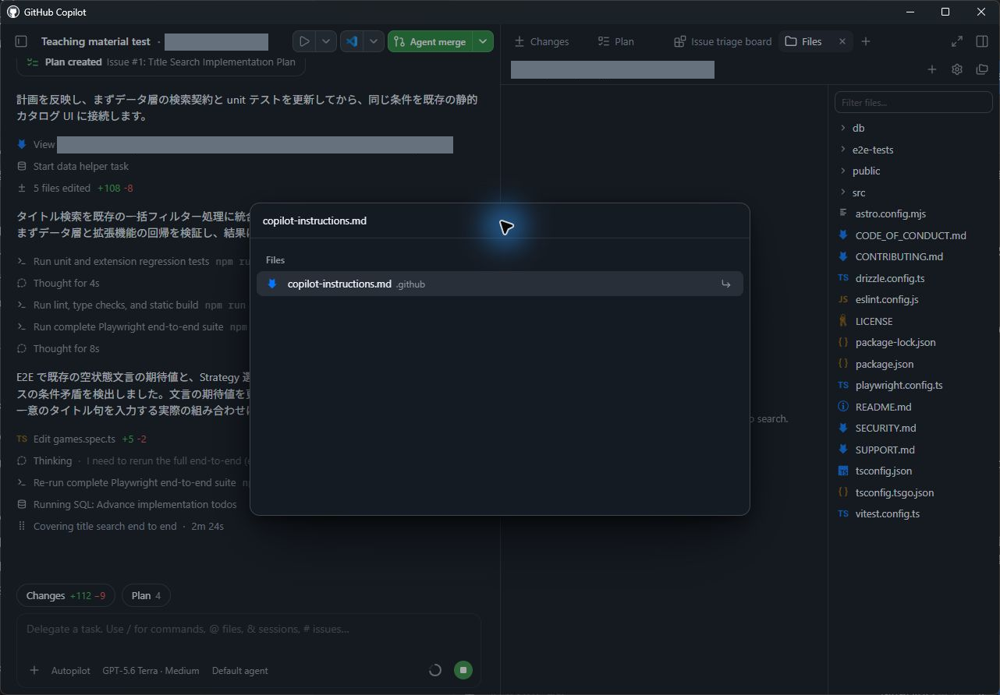
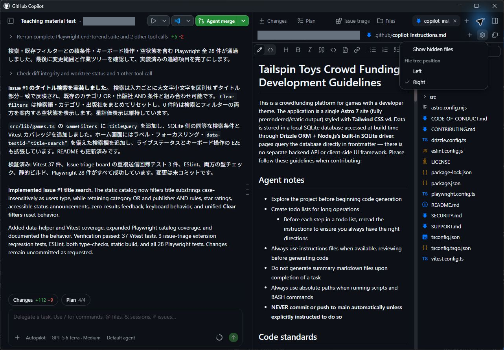
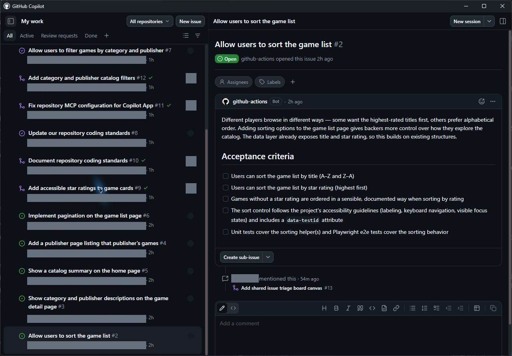

この章の進め方： App で操作します。掲載画像は Windows App 1.1.20 の実機画面です。検索・並べ替え Issue を使った操作位置の例も含むため、作業対象は本文に従って選んでください。ボタンや機能が見つからない場合は UI が異なるときの確認に沿って講師と確認してください。
生成 AI を扱うとき、コンテキストは重要です。タスクを特定の方法で実行する必要がある場合や、Copilot が把握しておくべき背景情報がある場合は、そのコンテキストを利用できるようにします。特に強力なツールの1つが指示ファイルです。指示ファイルには、必要なコードの内容だけでなく、その構成方法も記述します。このレッスンでは、リポジトリにドキュメント標準を追加します。ここから先の多くの作業と同様に、バックログの Issue から開始し、エージェントに変更を行わせます。
このレッスンでは、次の内容を学習します。
- リポジトリ指示とパス固有の指示ファイルがエージェントにどのように渡されるかを確認する。
- バックログ内の指示に関する Issue からセッションを開始する。
.github/copilot-instructions.mdにドキュメント標準を追加するようエージェントに依頼する。- 変更をレビューし、pull request としてマージする。
シナリオ
優れた開発組織と同様に、Tailspin Toys にも開発プラクティスのガイドラインと要件があります。内容は次のとおりです。
- TSDoc doc comment の形式でコードにドキュメントを追加する。
- フォーマット方法を文書化し、lint によって適用する。
指示ファイルを使用すると、示されたプラクティスに沿ってタスクを実行するために必要な情報を Copilot に提供できます。
指示ファイル
カスタム指示を使うと、Copilot にコンテキストと設定を提供でき、コーディングスタイルや要件をより正確に理解させることができます。Copilot をガイドし、より関連性の高い提案やコードスニペットを得るための強力な機能です。希望するコーディング規約、ライブラリ、コードに含めるコメントの種類まで指定できます。リポジトリ全体に適用する指示や、タスクレベルのコンテキストとして特定のファイル種類に適用する指示を作成できます。
指示ファイルには2つの種類があります。
.github/copilot-instructions.mdは、リポジトリに対するすべてのリクエストで Copilot に送信される単一の指示ファイルです。このファイルには、Copilot に送信するほとんどのチャットまたは CLI リクエストに関係する、プロジェクトレベルの情報を記載します。使用する技術スタック、構築するものの概要、ベストプラクティスなど、全体に適用するガイダンスを含められます。.github/instructions/*.instructions.mdファイルは、特定のタスクやファイル種類向けに作成できます。特定の言語 (TypeScript や Astro など) や、UI コンポーネントまたは新しい単体テスト一式の作成といったタスクに関するガイドラインを提供できます。
補足 Copilot は AGENTS.md、CLAUDE.md、GEMINI.md を通じて指示のガイダンスを取り込むほかの標準もサポートしており、常に適切なコンテキストを提供できます。
指示ファイルを管理するためのベストプラクティス
指示ファイルの作成方法を詳しく説明することは、このワークショップの範囲外です。ただし、サンプルプロジェクトに含まれる例は、代表的なアプローチを示しています。概要は次のとおりです。
copilot-instructions.mdの指示は、構築するものの説明、プロジェクトの構造、全体的なコーディング標準など、プロジェクトレベルのガイダンスに絞ります。*.instructions.mdファイルは、ファイル種類 (単体テスト、Astro コンポーネント、データレイヤー) または特定のタスクに固有の指示を提供するために使用します。- 自然言語を使います。ガイダンスは明確にし、コードの適切な例と不適切な例を提示します。
AI の使い方に唯一の方法がないのと同様に、指示ファイルの作成方法にも唯一の正解はありません。プロジェクトに最適な方法は、試行を重ねることで見つけられます。
ヒント GitHub Copilot を使用するすべてのプロジェクトには、充実した指示ファイル一式を用意することをお勧めします。このプロジェクトのファイルを確認すると、多くのコードファイル種類に対応する指示ファイルがあることがわかります。
テンプレートや出発点が必要な場合は、指示ファイル、カスタムエージェントなどのリソースが揃ったリポジトリ awesome-copilot を確認してください。
このプロジェクトのカスタム指示ファイルを確認する
このリポジトリに含まれる指示ファイルを確認します。中心となる copilot-instructions.md が1つと、さまざまなタスクに対応する *.instructions.md ファイル一式があります。エディターまたは GitHub Web UI で開いてください。
- 右パネルが表示されていない場合は、右上の Toggle panel を選択して開きます。

実機撮影：2026-09-13、Windows、GitHub Copilot App 1.1.20。撮影範囲全体を掲載（切り抜きなし）。灰色の箇所はアカウント・検証用リポジトリ・ローカルパス等の識別情報や個人の利用量をマスク。右パネルの Add tab メニュー。Terminal・Browser・Files・Canvas の入口。検索機能の実装中の操作例。
- パネルのタブ列にある +（Add tab）を選択します。
- Files を選択します。
-
Ctrl+P で Go to file を開き、
copilot-instructions.mdを検索します。Windows App 1.1.20 で確認した経路です。
実機撮影：2026-09-13、Windows、GitHub Copilot App 1.1.20。撮影範囲全体を掲載（切り抜きなし）。灰色の箇所はアカウント・検証用リポジトリ・ローカルパス等の識別情報や個人の利用量をマスク。Files で Ctrl+P（Go to file）を開き、copilot-instructions.md を検索。検索機能の実装中の操作例。 -
ファイル一覧から
copilot-instructions.mdを選択して開きます。 - ファイルを確認します。プロジェクトの簡単な説明に加えて、Agent notes、Code standards、Scripts、Repository Structure などのセクションがあります。Code standards の下には、ネストされた GitHub Actions Workflows のガイダンスがあります。これらは Copilot とのすべてのやり取りに適用されます。
- 右側のファイルツリーを確認します。
.githubが見えない場合は、ファイルパネルの歯車 View options → Show hidden files を有効にします。実走では、隠しファイルを表示すると.githubと指示ファイルがツリーに現れました。
フォルダーを順に開く代わりに、Go to file へ次の手順のファイル名を入力して開くこともできます。

実機撮影：2026-09-13、Windows、GitHub Copilot App 1.1.20。撮影範囲全体を掲載（切り抜きなし）。灰色の箇所はアカウント・検証用リポジトリ・ローカルパス等の識別情報や個人の利用量をマスク。Files の View options に Show hidden files・File tree position が表示された状態。会話中のテスト数37件は追加修正前の報告。
.github/instructionsフォルダーに移動し、ファイルを確認します。Astro ファイル、Drizzle データレイヤー、テストなどに対応する指示があります。.github/instructions/unit-tests.instructions.mdを開きます。先頭のapplyToフィールドに注目してください。これはリポジトリのルートを基準とする glob で、指示を適用するファイルを決定します。ここでは、TypeScript のテストファイル (**/*.test.tsに一致するファイルなど) が対象になります。- このプロジェクトで単体テストを作成するための固有の指示を確認します。
- 最後に
.github/instructions/drizzle.instructions.mdを開き、末尾まで移動します。ほかの指示ファイル (unit-tests.instructions.mdなど) と、プロジェクト内の既存ファイルへのリンクに注目してください。これにより、大きな指示セットを小さく再利用可能なファイルに分割し、コード生成時に参照する例を Copilot に提示できます。そこに記載されたパスは、リポジトリのルートではなく指示ファイルを基準とします。
補足
copilot-instructions.mdの Code formatting requirements セクションにはプロジェクトのコーディング標準が記載されていますが、コード内のドキュメントはまだ必須ではありません。次の手順で、TSDoc doc comment とファイルコメントヘッダーの規則を追加します。
指示に関する Issue から開始する
前のレッスンでは、直接入力したプロンプトからセッションを開始しました。しかし、多くの作業は Issue から始まります。指示ファイルを更新するために登録された Issue に基づいて新しいセッションを作成し、更新を依頼します。
補足 指示ファイルは Copilot が生成するコードに大きな影響を与えるため、Copilot を明確にガイドする内容になっていることを慎重に確認してください。このレッスンのように、Copilot で最初のバージョンを作成した後、自分でレビューして更新内容が要件を満たすことを確認する方法が効果的です。
- サイドバーで My work を選択します。
- Update our repository coding standards というタイトルの Issue を選択して開きます。
- 右上の New session を選択し、Issue に基づく新しいセッションを開始します。

実機撮影：2026-09-13、Windows、GitHub Copilot App 1.1.20。撮影範囲全体を掲載（切り抜きなし）。灰色の箇所はアカウント・検証用リポジトリ・ローカルパス等の識別情報や個人の利用量をマスク。My work の Issue 一覧と右上の New session。並べ替え Issue を開いた操作位置の例で、この Issue の実装は開始していない。各章では本文の対象 Issue を選ぶ。
- 次のプロンプトを使い、Issue に記載された要件を満たすように指示ファイルを更新することを Copilot に依頼します。
この Issue に記載された要件に従って、プロジェクトの指示ファイルを更新してください。PR はまだ作らないでください。2026年9月13日の確認（Windows App 1.1.20）： GitHub 連携プロジェクトの My work → 対象 Issue → New session で専用 worktree が作成され、前章でマージした星評価を継承しました。初回は Accept this repository configuration? が表示されます。Review configuration でセットアップと Run の内容を確認してから承認してください。今回の実走では利用者の承認後に送信でき、指示ファイル・README・ESLint と最小限の書式修正を含む7ファイルを更新しました。単体30件・E2E21件・lint・型検査は成功しています。
Copilot が更新を行います。
変更をレビューする
Copilot が行った更新を読み、更新された指示に基づいて生成するコード例も提示させます。
- 入力欄の上にある Changes（Open changes）を選択してコードの変更を開きます。Windows App 1.1.20 の GitHub 連携セッションでは、右パネルに Changes (7), +43, -4 が表示されました。

実機撮影：2026-09-13、Windows、GitHub Copilot App 1.1.20。撮影範囲全体を掲載（切り抜きなし）。灰色の箇所はアカウント・検証用リポジトリ・ローカルパス等の識別情報や個人の利用量をマスク。会話欄の Changes と右側の差分パネル。表示コードは追加検証の検索機能で、各章の変更内容とは異なる。
- 更新された指示ファイルをレビューします。コードにドキュメントとコメントを追加するためのガイドラインが含まれていることを確認します。
補足 AI は決定論的ではなく確率的に動作するため、実際のテキストは異なります。
- 次のプロンプトを使い、Copilot が今後生成するコード例を作成するよう依頼します。
ファイルを変更せず、コードの例だけを見せてください。新しい指示に従って、すべての Publishers を返すライブラリコンポーネントを作るよう依頼した場合、どのようなコードになりますか？- Copilot が提案するコードをレビューします。更新された指示で求めたとおり、TSDoc doc comment とファイルヘッダーコメントが含まれていることを確認します。
これでプロジェクトの指示ファイルを更新し、その効果を確認できました。
pull request を作成してマージする
指示ファイルはリポジトリのアセットとなり、チームのほかのメンバーと共有されます。ほかのアセットと同様に、作業内容を含む PR を作成します。
- 右上隅にある Create PR を選択します。Windows App 1.1.20 の GitHub 連携セッションでは、この操作からコミット・push・PR 作成まで進みました。検証用 PR #10 は作成後に通常マージし、次章の専用 worktree が更新済み規約を継承することも確認しました。実走記録を参照してください。
- 求められた場合は Sign in with your browser を選択し、画面の指示に従って認証します。
- Copilot が PR の作成を開始します。
PR が作成されると、Copilot はリポジトリで実行する必要があるワークフローを監視します。しばらくすると、右上のボタンが Ready to merge に変わります。これは PR をマージする準備が整ったことを示します。
- Ready to merge を選択します。
- 新しいダイアログウィンドウで Merge pull request を選択し、pull request をマージします。
補足 標準がデフォルトブランチにマージされると、すべてのメンバーと新しいセッションでプロジェクトの一部として利用できます。次のレッスンで最新のデフォルトブランチからフィルター機能のセッションを開始すると、エージェントは自動的にこの標準に従います。生成された TypeScript に、依頼していなくても TSDoc doc comment が含まれます。指示が生成コードを形作ることを示す、小さいながらも実際的な例です。
講師向け： 緊急の作業保全が必要な場合だけ 対応手順 を参照してください。CLI の実装成功は、この章の App 操作の完了には数えません。
まとめと次のステップ
アプリが指示ファイルからコンテキストを取得する仕組みを確認し、セッションを使ってリポジトリ全体の標準を追加してマージしました。具体的には、次の作業を行いました。
- リポジトリの
copilot-instructions.mdとパス固有の*.instructions.mdファイルを確認した。 - バックログ内の指示に関する Issue からセッションを開始した。
.github/copilot-instructions.mdにドキュメント標準を追加するようエージェントに依頼した。- 変更をレビューし、pull request としてマージした。
次は、新しいセッションでフィルター機能を構築し、先ほどマージした標準が適用される様子を確認します。レッスン 4「Autopilot による機能の構築」に進んでください。